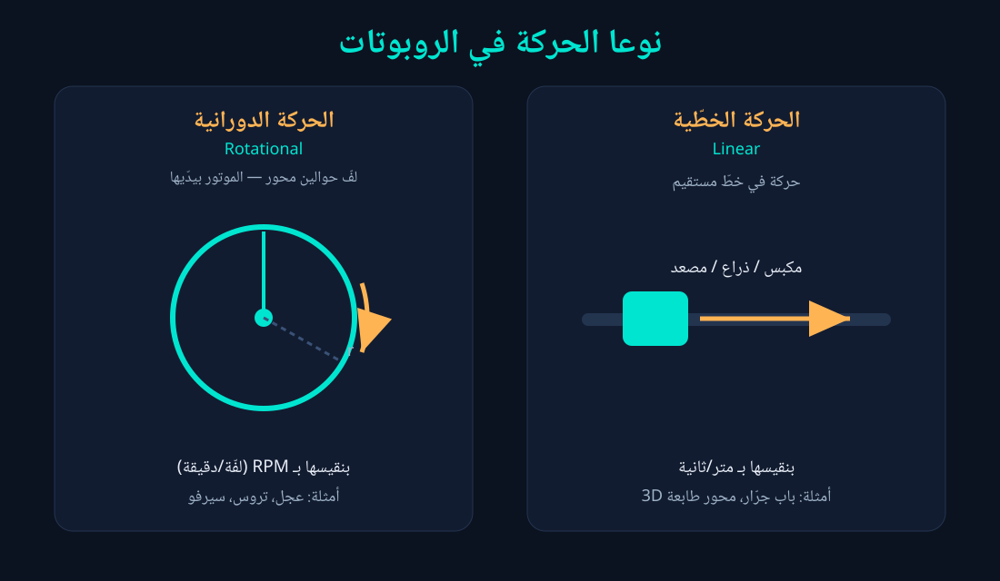
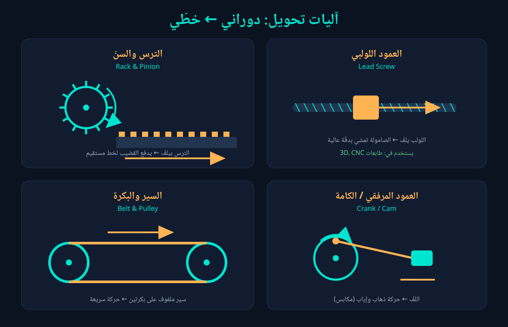
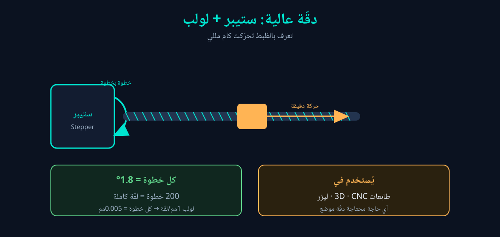

الحركة الخطّية والدورانية
ذاكر الدرس بسيميوليشنات حيّة — حرّك، جرّب، واحسب بنفسك.
نوعا الحركة
الموتور بطبيعته بيعمل حاجة واحدة بس: بيلفّ (حركة دورانية). لكن أحياناً عايزين حركة خطّية (خط مستقيم). جرّب العجلة بنفسك:
العجلة قطرها 6.5سم — السرعة الخطّية بتتغيّر مع الـRPM
- الدورانية: لفّ حوالين محور — نقيسها بـ RPM. (عجل، تروس، سيرفو)
- الخطّية: حركة في خط مستقيم — نقيسها بـ متر/ثانية. (مكبس، ذراع، مصعد)
📊 شوف الرسم التوضيحي

نظام نقل الحركة
الموتور بيلفّ بسرعة ثابتة، بس إنت محتاج تتحكّم في السرعة والعزم اللي بيوصلوا للعجل. ده شغل نظام نقل الحركة — وأشهره التروس (Gears).
🔧 محاكاة نسبة التروس (Gear Ratio)
طرق نقل الحركة الأساسية
| الطريقة | المميزات | الاستخدام |
|---|---|---|
| تروس (Gears) | عزم عالي، دقيق، نسب ثابتة | جيربوكس الموتور |
| سير وبكرة (Belt) | هادي، يمتصّ الصدمات، رخيص | محاور الطابعات |
| سلسلة (Chain) | قوي، ميزحلقش، لمسافات | الموتوسيكل، روبوتات كبيرة |
تحويل دوراني ← خطّي
الموتور بيلفّ، بس عايزين حركة مستقيمة. دي الآليات اللي بتحوّل — جرّب الـ Rack & Pinion:
الترس بيلفّ ← القضيب المسنّن بيتحرك في خط مستقيم
| الآلية | الفكرة | الاستخدام |
|---|---|---|
| Rack & Pinion | ترس على قضيب مسنّن | توجيه، بوابات |
| Lead Screw | صامولة على عمود مقلوظ | طابعات 3D، CNC |
| Belt & Pulley | سير على بكرتين | حركة سريعة |
| Crank / Cam | لفّ ← ذهاب وإياب | مكابس |
📊 شوف الرسم التوضيحي للأربع آليات

حاسبة المسافة والسرعة
دي أهم معادلة في الدرس: المسافة في لفّة = محيط العجلة. اكتب أرقامك واحسب فوراً:
الأودومتري
إزاي الروبوت يعرف هو فين من غير GPS؟ بيعدّ لفّات العجلة بحساس Encoder ويضرب في المحيط. شغّل الروبوت وشوف:
الدقّة: ستيبر + لولب
لو محتاج دقّة بالمللي (زي طابعة 3D)، تستخدم موتور ستيبر (بيتحرك خطوة خطوة) مع عمود لولبي.
- كل خطوة في الستيبر = 1.8° → يعني 200 خطوة = لفّة كاملة.
- لو اللولب بيمشي 1مم في اللفّة → كل خطوة بتحرّك 0.005مم بس!
📊 شوف الرسم التوضيحي
